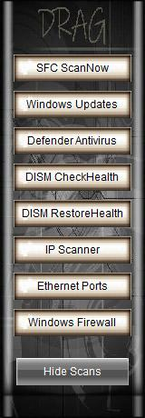
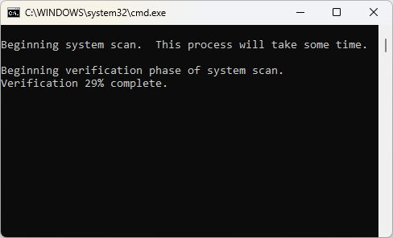
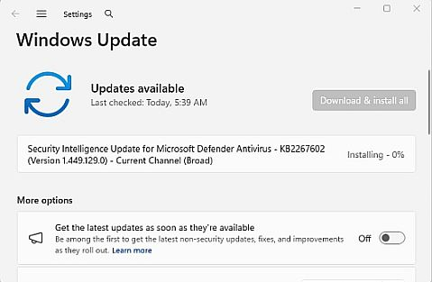
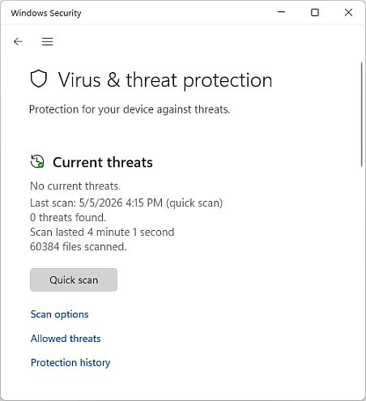
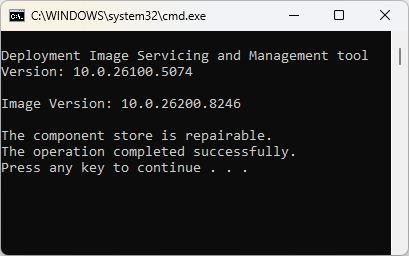
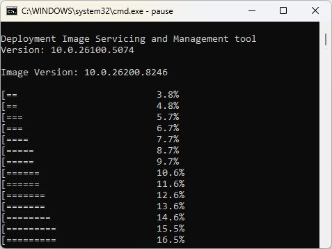
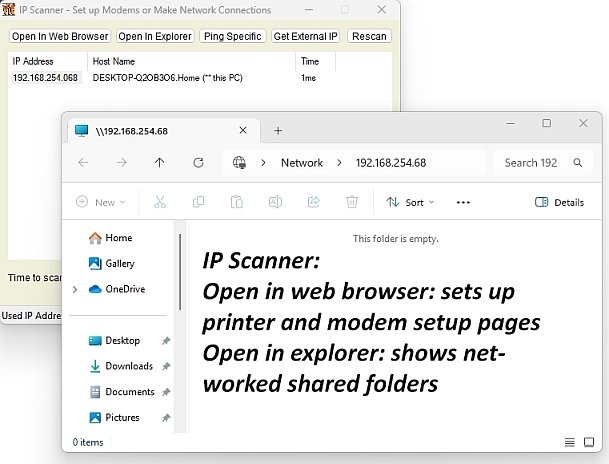
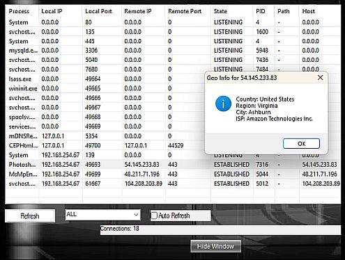
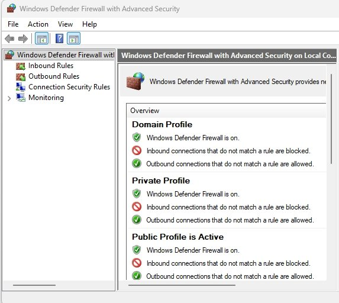

 |
Vics One app TechTool Scans Window1: System File Checker 2: Windows Updates 3: Defender Antivirus 4: DISM Health Check 5: DISM Restore Health 6: IP Scanner 7: Ethernet Ports 8: Windows Firewall Settings |
=========================================
Vics One app TechTool 1- SFC /scannowThe command is a built-in Windows utility that scans the integrity of your protected system files and replaces corrupted, missing, or changed versions. It is frequently used to resolve system crashes, freezing, or malfunctioning Windows features. |
SCRIPT: - SFC scannow:
sfc /scannow & pause
=========================================
|
|
Vics One app TechTool 2- Windows UpdatesHow to Manage Windows Updates Automate updates: Toggle on "Get the latest updates as soon as they're available" within the main Windows Update screen to receive background patches immediately. Set Active Hours: Prevent sudden, inconvenient system reboots by setting your working hours under Advanced options > Active hours. Pause updates: If you need temporary stability during a critical project, you can pause downloads for several weeks from the main menu. To Disable Permanently use Tools/Turn off Updates in program Download manually: For offline machines, standalone patch packages must be sourced directly from the - Microsoft Update Catalog. <=LINK |
=========================================
| |
Vics One app TechTool 3- Windows SecurityOpens Windows Security Centralized dashboard that unifies your real-time antivirus defenses, network firewall management, hardware health diagnostics, and credential isolation tools. Cybersecurity analysts and Microsoft state that default built-in protection is sufficient for the vast majority of consumers, completely eliminating the need to pay for heavy third-party antivirus |
=========================================
Vics One app TechTool 4-DISM Health CheckCheckhealth is a quick, non-destructive diagnostic command used to verify if your Windows image is corrupted. It scans the internal system component store flag and reports back in under five seconds. Because it only checks existing system log flags, it will not fix any problems or scan deep system files. |
SCRIPT: - DISM Check Health:
C: dism /online /cleanup-image /checkhealth pause
=========================================
Vics One app TechTool 5- DISM Restore HealthDeployment Image Servicing and Management (DISM.exe) Is a built-in Windows command-line tool used to service, repair, and prepare Windows images (.wim, .vhd, or .vhdx) Including the running operating system, Windows PE, and recovery environments. It fixes corrupted system files and apps |
SCRIPT: - DISM Restore Health:
C: dism /online /cleanup-image /restorehealth pause
=========================================
|
|
Vics One app TechTool 6- IP ScannerIP Scanner: Open in web browser: sets up printer and modem setup pages Open in explorer: shows networked shared folders |
=========================================
Vics One app TechTool 7- Port CheckerEthernet Ports: - Important! If virus infected comp do not connect to internet, Open temp folder inspect files 50 kb and under in notepad Check listening and established ports (even though your not connected) anything strange, inspect and find out why and where |
=========================================
|
|
Vics One app TechTool 8- Windows FirewallWindows Defender Firewall is a built-in security layer that monitors and filters all incoming and outgoing network traffic based on predefined security rules. It acts as a digital barrier to prevent hackers, worms, and malicious software from gaining unauthorized access to your computer via internet or local network connections. |
=========================================